Plot results from searching in data using the zero-latency search#
So now we get to the results plotting - this are a bit out-of-order from the paper here as this notebook contains plots from all the runs, both with and without signal removal.
# This stuff only actually gets used in this cell:
from matplotlib import pyplot as plt
# Use the style file defined in the repository route
plt.style.use('../../paper.mplstyle')
# This is the folder where results plots will be saved:
paper_plots_dir = '../../paper/images/zero_latency_results'
# The common and plotting utils modules are in the parent
# `search` directory
# Here we add the `search` directory to the python path so we can
# do a local import
import sys
import os
parent_dir = os.path.abspath("..")
if parent_dir not in sys.path:
sys.path.insert(0, parent_dir)
# Everything plotted in this notebook is done using these helper modules
import plotting_utils
from common_utils import get_results_zero_latency as get_results
/Users/gareth/miniconda3/envs/env_lisa_premerger_sangria/lib/python3.11/site-packages/pycbc/types/array.py:36: UserWarning: Wswiglal-redir-stdio:
SWIGLAL standard output/error redirection is enabled in IPython.
This may lead to performance penalties. To disable locally, use:
with lal.no_swig_redirect_standard_output_error():
...
To disable globally, use:
lal.swig_redirect_standard_output_error(False)
Note however that this will likely lead to error messages from
LAL functions being either misdirected or lost when called from
Jupyter notebooks.
To suppress this warning, use:
import warnings
warnings.filterwarnings("ignore", "Wswiglal-redir-stdio")
import lal
import lal as _lal
Load in the results - both PSD models, and both with and without signal removal
times_before = [0.5, 1, 4, 7, 14]
results_model_raw = get_results(
"results/psd_model/data_runs_raw_{time_before}_results.hdf",
times_before
)
results_model_remove = get_results(
"results/psd_model/data_runs_remove_{time_before}_results.hdf",
times_before
)
results_estimate_raw = get_results(
"results/psd_estimate/data_runs_raw_{time_before}_results.hdf",
times_before
)
results_estimate_remove = get_results(
"results/psd_estimate/data_runs_remove_{time_before}_results.hdf",
times_before
)
# Get the truth times
import ldc.io.hdf5 as hdfio
input_data = '../../datasets/LDC2_sangria_hm_training.hdf'
mbhb_sky, _ = hdfio.load_array(input_data, name="sky/mbhb/cat")
truth_times_s = mbhb_sky['CoalescenceTime']
Full run plots#
This is the plot of the analysis without signal removal. even in the full-run plot we can see the secondary peaks, particularly for signals 0, 6 and 10.
fig_model_all, _ = plotting_utils.plot_around_time(
results_one=results_model_raw,
truth_times=truth_times_s,
times_before=times_before,
width_factor=1.5,
label_one='Search results',
legend_loc='upper right'
)
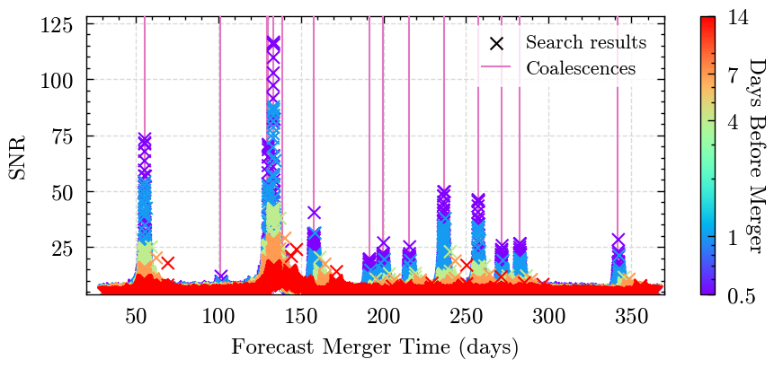
Figure 6#
This is the same, but with the mergers removed from the data
Figure 6#
This is the same, but with the mergers removed from the data
fig_model_all, _ = plotting_utils.plot_around_time(
results_one=results_model_remove,
truth_times=truth_times_s,
times_before=times_before,
marker_one='o',
label_one='Search Results (mergers removed)',
width_factor=2,
height_factor=1.25,
legend_loc='upper right'
)
fig_model_all.savefig(f'{paper_plots_dir}/figure_6_zerolatency_result.png', dpi=300)
Now lets plot them both on the same axis just to compare.
fig_estimate_all, _ = plotting_utils.plot_around_time(
results_one=results_estimate_raw,
results_two=results_estimate_remove,
truth_times=truth_times_s,
times_before=times_before,
width_factor=1.5,
legend_loc='upper right'
)
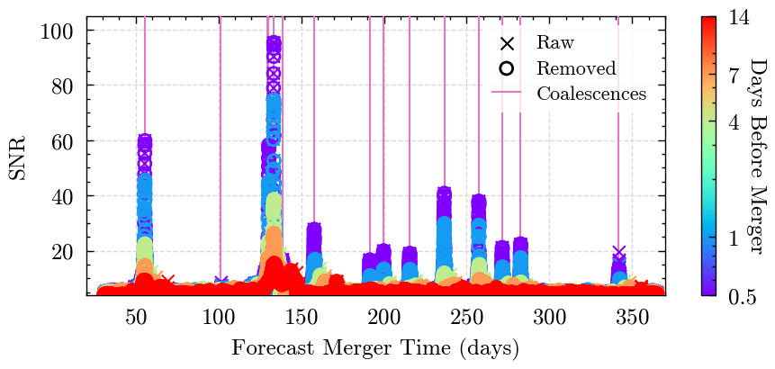
This is the example signal shown in figures 4&5, but the raw-only version to start with
Individual Signal Plots#
This is the example signal shown in figures 4&5, but the raw-only version to start with
example_signal_number = 10
fig_model, _ = plotting_utils.plot_around_time(
results_one=results_model_raw,
signal_truth_time=truth_times_s[example_signal_number],
truth_times=truth_times_s,
start_time_offset=-15,
end_time_offset=18,
times_before=times_before,
signal_number=example_signal_number,
title='off',
legend_loc='upper right',
label_one='Results'
)
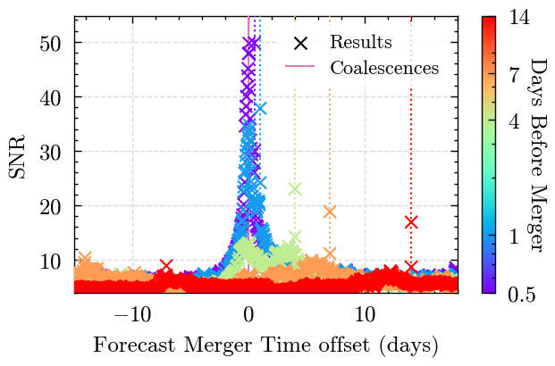
Figure 5#
One of the plots from the paper - a zoom in on Signal 10 so that we see the secondary peaks clearly in the raw results, and that they have been removed in the peak removal instance.
fig_model, _ = plotting_utils.plot_around_time(
results_one=results_model_raw,
results_two=results_model_remove,
signal_truth_time=truth_times_s[example_signal_number],
truth_times=truth_times_s,
start_time_offset=-16,
end_time_offset=16,
times_before=times_before,
signal_number=example_signal_number,
title='off',
legend_loc='upper left',
alpha_one=0.3
)
fig_model.savefig(f'{paper_plots_dir}/figure_5_signal_{example_signal_number}_removed.pdf')
For completeness - make the plot for all the signals
for i, truth_time_s in enumerate(truth_times_s):
fig_model, _ = plotting_utils.plot_around_time(
results_one=results_model_raw,
results_two=results_model_remove,
signal_truth_time=truth_time_s,
truth_times=truth_times_s,
start_time_offset=-20,
end_time_offset=20,
times_before=times_before,
signal_number=i,
legend_loc='upper right' if i in [5,6,9,12,13] else 'upper left',
alpha_one=0.4
)
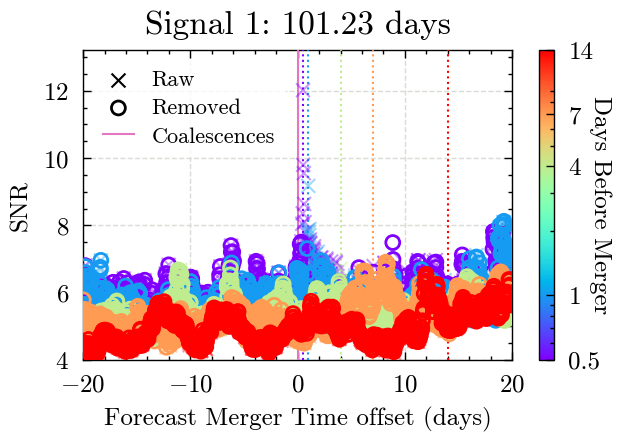
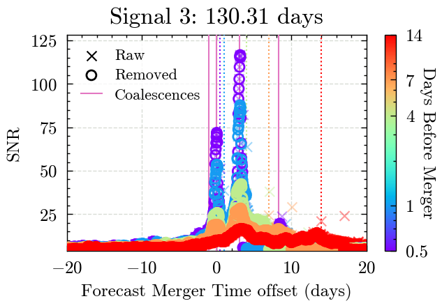
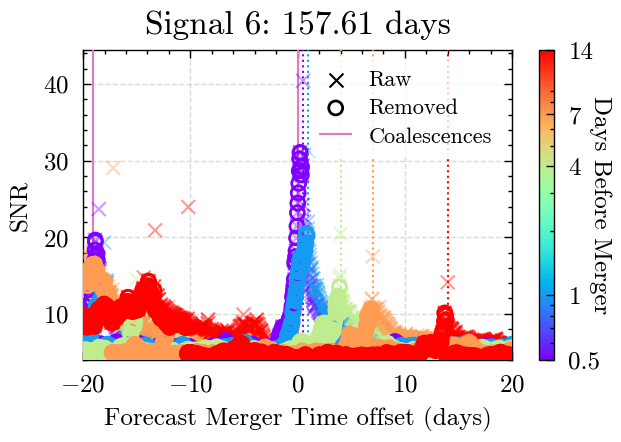
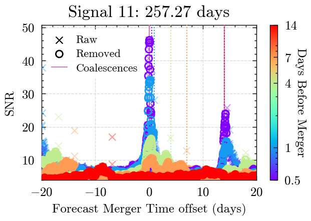
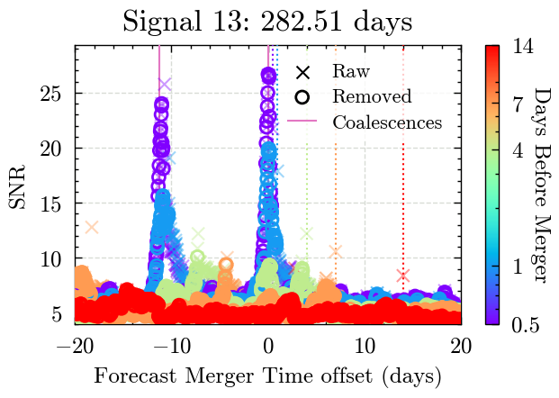
Data end time plots#
Now make the plots, but this time, use the data end time on the x-axis rather than the forecast merger time. This allows us to see some other features.
Data end time plots#
Now make the plots, but this time, use the data end time on the x-axis rather than the forecast merger time. This allows us to see some other features.
for i, truth_time_s in enumerate(truth_times_s):
fig_model, _ = plotting_utils.plot_around_time(
results_one=results_model_raw,
results_two=results_model_remove,
signal_truth_time=truth_time_s,
truth_times=truth_times_s,
start_time_offset=-20,
end_time_offset=10,
times_before=times_before,
signal_number=i,
predicted_time=False,
legend_loc='upper right' if i in [5,12,13] else 'upper left'
)
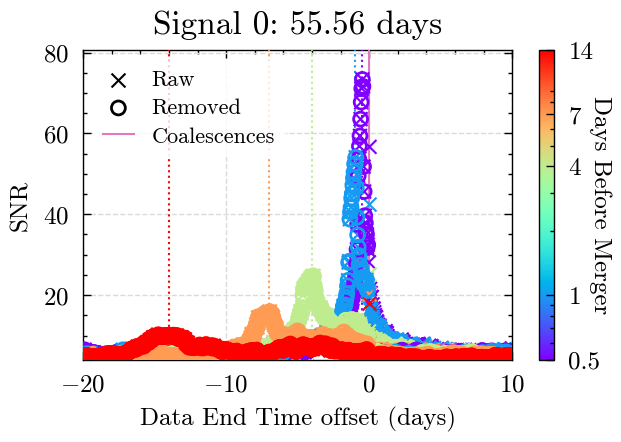
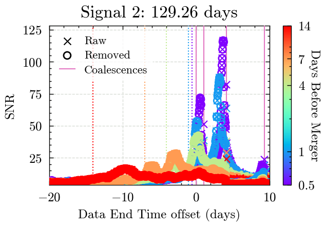
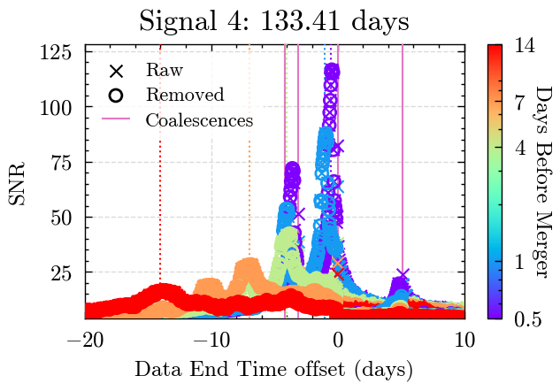
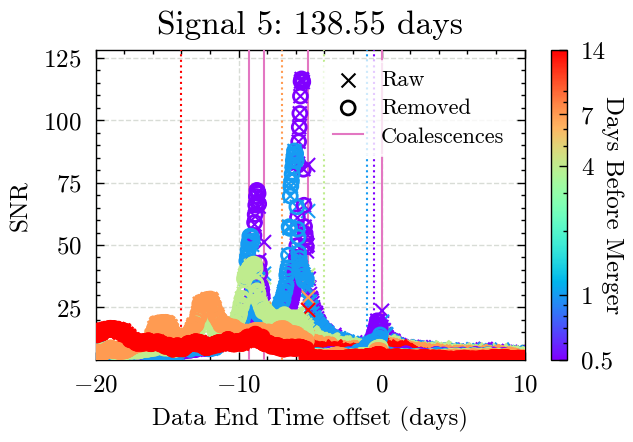
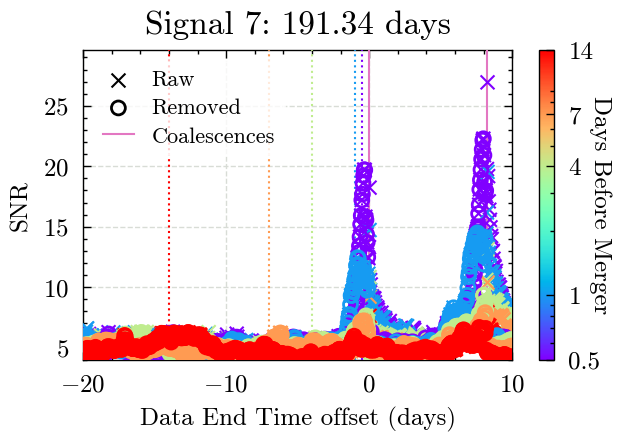
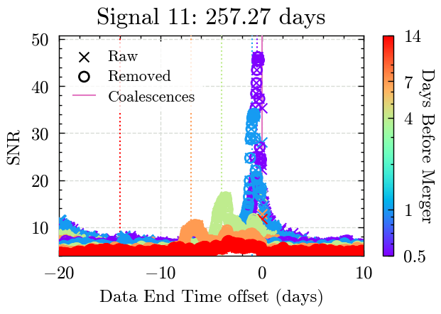
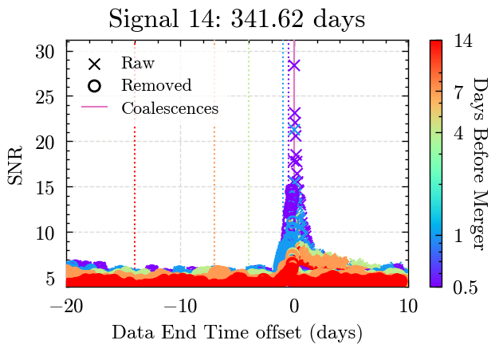
Estimated PSD - forecast time#
Raw/removed plots, but with the estimated PSD instead
Estimated PSD - forecast time#
Raw/removed plots, but with the estimated PSD instead
for i, truth_time_s in enumerate(truth_times_s):
fig_estimate, _ = plotting_utils.plot_around_time(
results_one=results_estimate_raw,
results_two=results_estimate_remove,
signal_truth_time=truth_time_s,
truth_times=truth_times_s,
start_time_offset=-10,
end_time_offset=20,
times_before=times_before,
signal_number=i,
legend_loc='upper right'
)
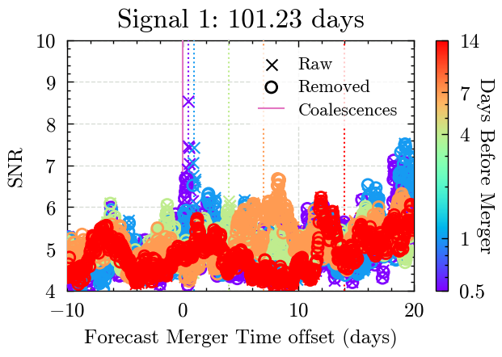
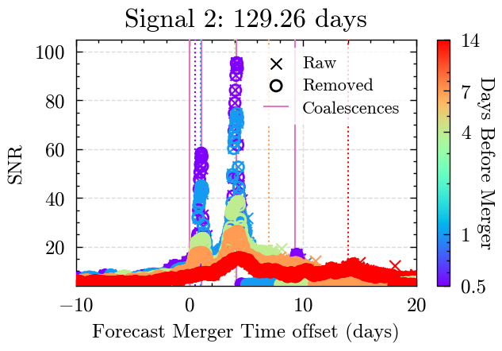
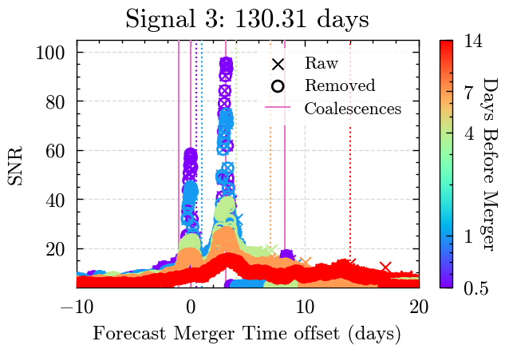
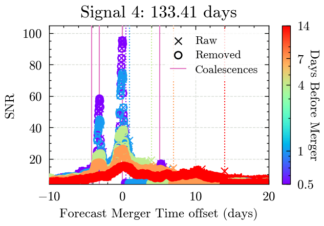
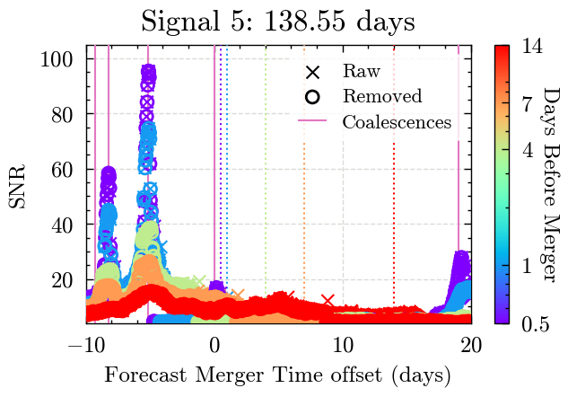
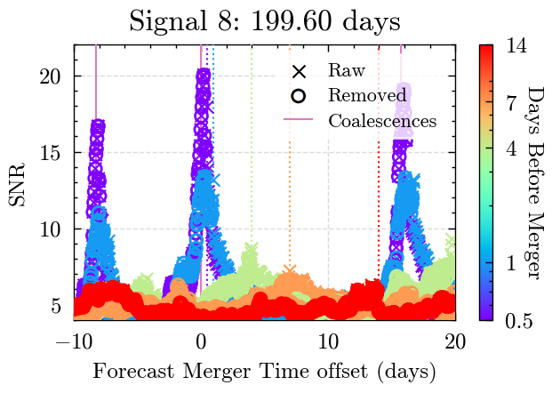
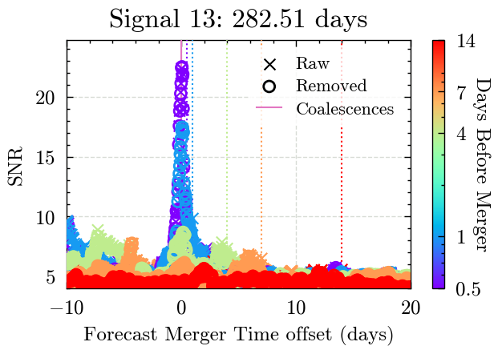
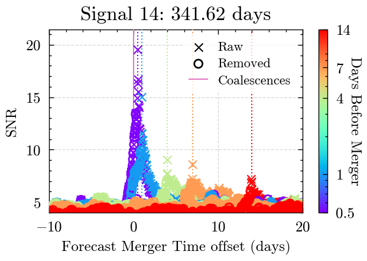
Comparing estimated to model PSD#
Comparing estimated to model PSD#
for i, truth_time_s in enumerate(truth_times_s):
if i in [8,11]:
legend_loc = 'upper center'
else:
legend_loc = 'upper right'
fig_psd_comparison, _ = plotting_utils.plot_around_time(
results_one=results_model_remove,
results_two=results_estimate_remove,
signal_truth_time=truth_time_s,
truth_times=truth_times_s,
start_time_offset=-10,
end_time_offset=20,
times_before=times_before,
signal_number=i,
label_one='PSD model',
label_two='PSD estimate',
legend_loc='upper left' if i in [] else 'upper right'
)
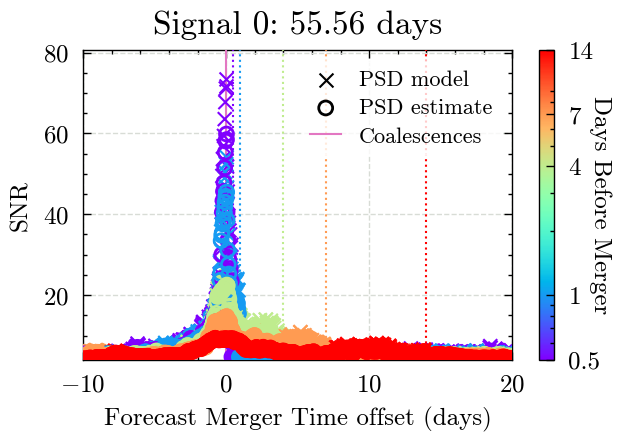
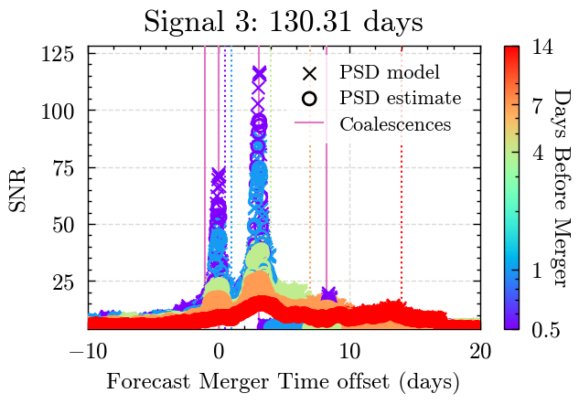
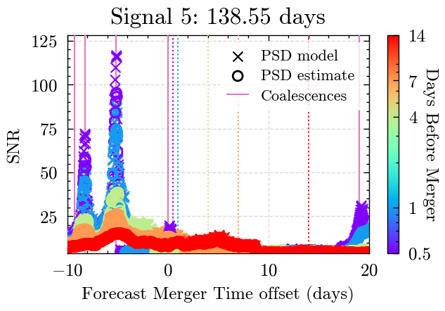
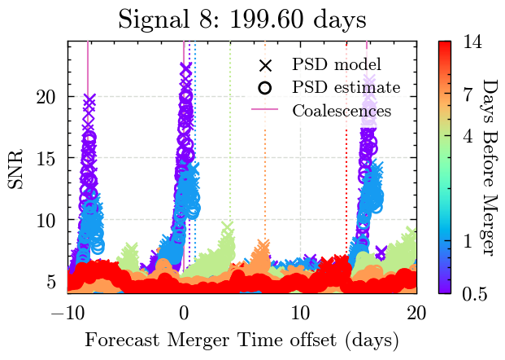
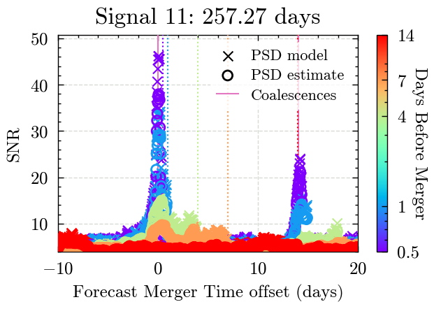
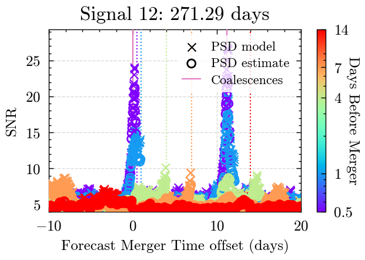
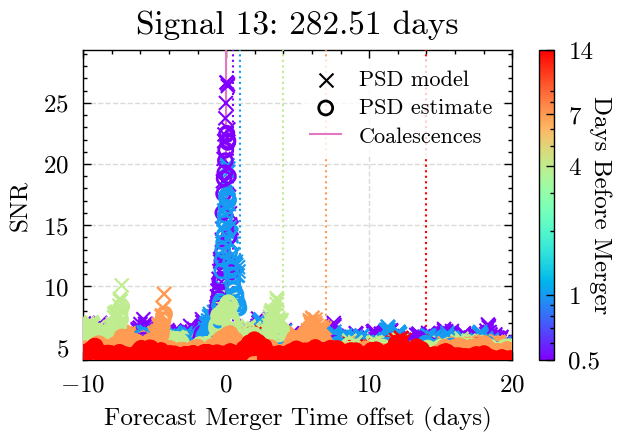
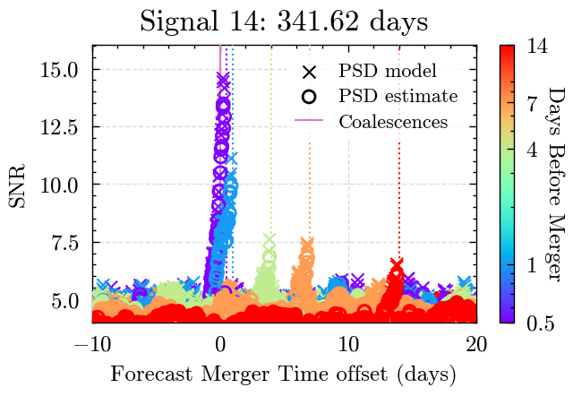